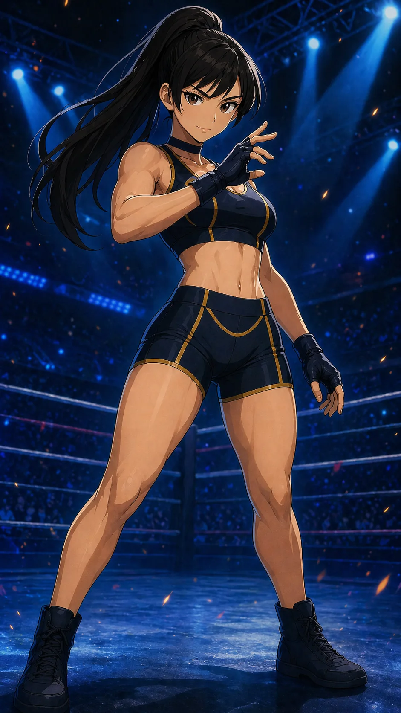

CHARACTER FILE

アヤカ
『過去を断ち切り、未来を守る刃』
基本情報
- 年齢
- 23歳
- 体格
- 163cm・しなやかな筋肉質体型（特に蹴り技主体の鋭さが際立つ）
必殺技
【ジャスティスクレセント】鋭い踵落としで月の弧を描く、一瞬のカウンターアタック。相手の油断を見逃さない。
超必殺技
【ブレイド・オブ・リデンプション】迫りくる一撃を紙一重でかわす。踏み込みと同時に、肘、膝、掌底――三連のカウンターが急所を打ち抜く。崩れた相手の内側へ踏み込み、そのまま腰を鋭く回し、回転蹴りを叩き込む。迷いなき軌道が、すべてを断ち切る。
性格
冷静な判断力と秘めた情熱を併せ持つ。かつてヴィランアライアンスに所属していたが、心の奥で正義を求めていた。過去を背負いながらも、今は正義のために刃を振るう覚悟の人。
ファイトスタイル
テクニカル型・カウンター重視。近距離での攻防に長け、相手の隙を一瞬で突く精密な動きを得意とする。
相性
- 有利な相手
- アグレッシブな突撃型（勢いに乗る相手ほど逆手に取れる）
- 不利な相手
- ディフェンス重視の耐久型（攻め手を誘発しにくい相手）
プロフィール
過去を切り離し、未来を切り拓く刃──アヤカ。かつてヴィランアライアンスに身を置き、冷酷無慈悲な戦士として恐れられていた。だが、ある一戦が彼女の運命を変える。それは、まだ未熟な新人――サラとの対決だった。 勝利は目前だった。だが、ボロボロになりながらも何度も立ち上がるサラの姿に、かつて自分が失った“何か”が蘇った。その一途な瞳に、アヤカは「力でねじ伏せることだけが正義じゃない」と、心を撃たれたのだ。試合後、彼女はヴィランを去り、すべての過去に別れを告げる。 今のアヤカは、鋭利なカウンターとしなやかな戦術を武器に、仲間を信じて戦う覚悟を宿す。「ブレイド・オブ・リデンプション」――それは、サラとの出会いが与えてくれた、新たな生き方の象徴。 あの日、あの笑顔に導かれたからこそ、彼女の刃は、もう迷わない。
口癖
「はあ？なんで私が！？…仕方ない。」